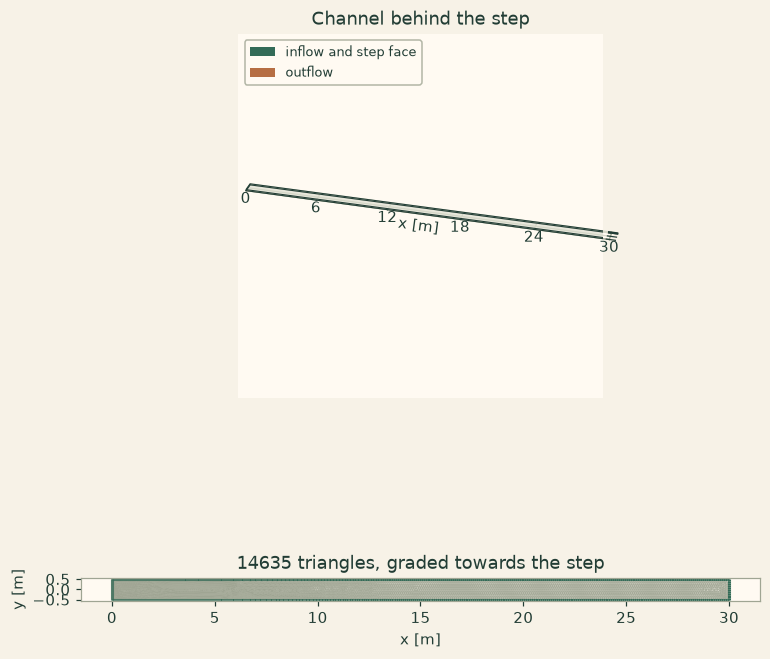

Docs › Examples › Laminar flow over a backward-facing step
Fluid flow · 2D
Laminar flow over a backward-facing step
The channel behind a step of half the channel height, from Re = 100 to Re = 800, with the recirculation zones on both walls.

What it computes
The channel is read from a STEP file and cut to its cross-section; OneSimulation solves the planar Navier-Stokes equations with Taylor-Hood elements on a graded triangle mesh, reaching Re = 800 by Newton continuation, and reads the separation and reattachment points from the near-wall velocity. The script that builds the STEP file comes with the notebook.
What it checks
At Re = 800 the lower reattachment (6.093 H), the upper separation (4.859 H) and the upper reattachment (10.467 H) agree with Gartling's benchmark (6.10, 4.85, 10.48) within 0.1 %, 0.2 % and 0.1 % on the finest of three meshes.
Geometry
The notebook starts at the import of the CAD file backward_facing_step_flow.step: STEP (AP242), readable by any CAD program, with the names of the faces that the boundary conditions use. Put it next to the notebook.

The geometry script
The script backward_facing_step_flow_geometry.py builds the geometry with the CAD objects of OneSimulation and writes the file. Change a dimension there, run it, and run the notebook again.
"""Geometry of the OneSimulation example "Laminar flow over a backward-facing step".
Builds the channel behind the step, 30 m long and 1 m high (the step height is 0.5 m), as a slab
0.1 m thick with the CAD objects of OneSimulation and writes backward_facing_step_flow.step. The
step corner sits at the origin of the face x_min: the upper half of that face is the inflow, the
lower half the vertical face of the step. The faces keep their names x_min, x_max, y_min, y_max,
z_min and z_max in the file; the example computes on the cross-section z = 0.05 m.
"""
from onesim.cad.d3 import Box
channel = Box(length=30.0, width=1.0, height=0.1, origin=(0.0, -0.5, 0.0))
channel.save("backward_facing_step_flow.step")The notebook
The complete notebook, cell by cell. Run it to produce the figures and the comparison printout.
A channel suddenly doubles its height. The flow cannot follow the sharp corner of the step: it separates, and a recirculation zone forms behind the step until the stream reattaches to the lower wall at the distance \(x_r\). Armaly, Durst, Pereira and Schönung (1983) measured how \(x_r\) grows with the Reynolds number for an expansion ratio of almost two; above \(Re\approx400\) a second recirculation zone opens on the upper wall. The flow is a standard test for incompressible flow solvers because the reattachment length is sensitive to the resolution of the free shear layer behind the step.
The channel behind the step comes from the CAD file backward_facing_step_flow.step, written by backward_facing_step_flow_geometry.py: 30 channel heights long, height \(H=1\) m, step height \(S=H/2\), with the step corner at the origin. The model is its cross-section. The fluid enters through the upper half of the face x_min with the parabolic profile of the channel upstream; the lower half of that face is the vertical face of the step. With the mean inflow speed \(\bar U=1\) m/s the Reynolds number is \(Re=\bar U\,H/\nu\), which equals the definition of Armaly et al. with the hydraulic diameter \(2(H-S)\) of the upstream channel.
| side | condition | |---|---| | x_min, \(0<y<H/2\) (inflow) | \(u=24\,\bar U\,y\,(H/2-y)/H^2\), \(v=0\) | | x_min, \(-H/2<y<0\) (step face) | no slip | | y_min, y_max (lower and upper wall) | no slip | | x_max (outflow) | traction free |
Reference. D. K. Gartling, "A test problem for outflow boundary conditions - flow over a backward-facing step", Int. J. Numer. Methods Fluids 11, 953-967 (1990): at \(Re=800\) the lower eddy reattaches at \(x=6.10\,H\), the upper eddy extends from \(x=4.85\,H\) to \(x=10.48\,H\). B. F. Armaly, F. Durst, J. C. F. Pereira, B. Schönung, J. Fluid Mech. 127, 473-496 (1983) for the growth of \(x_r\) with the Reynolds number.
import numpy as np
from onesim.cad.exchange import load
from onesim.materials import NewtonianFluid
from onesim.meshing import TriangularMesher
from onesim.numerics import Numerics
from onesim.numerics.fem import FiniteElement, TaylorHood
from onesim.numerics.linear import SparseDirect
from onesim.numerics.nonlinear import Newton
from onesim.physics.hydrodynamics import (
FixedVelocity,
FlowTraction,
NoSlipWall,
PlanarIncompressibleNavierStokes,
)
from onesim.simulation import Problem, Simulation
from onesim.visualization import plots, theme
theme.set()Geometry and mesh
section cuts the slab at half thickness. The triangles are 3 cm wide at the step and grow downstream, where the flow becomes parallel again; the mesh study scales all sizes by 1.4 and by 0.8.
part = load("backward_facing_step_flow.step")
channel = part.section((0, 0, 1), origin=(0, 0, 0.05))
faces = channel.boundaries
length, height = channel.size[:2]
step = height / 2
meshes = {
scale: TriangularMesher(
target_size=0.1 * scale,
size_field=lambda p, s=scale: s * np.minimum(0.03 + 0.004 * p[:, 0], 0.1),
).generate(channel)
for scale in (1.4, 1.0, 0.8)
}
mesh = meshes[1.0]
fig = plots.figure(layout=[["geometry"], ["mesh"]], size=(16, 7))
plots.geometry(
part,
selection={
"inflow and step face": part.boundaries.x_min,
"outflow": part.boundaries.x_max,
},
labels=False,
camera=plots.Camera(elevation=30, azimuth=-75),
title="Channel behind the step",
ax=fig["geometry"],
)
plots.mesh(
mesh,
groups=("all",),
legend=False,
title=f"{mesh.cell_count} triangles, graded towards the step",
ax=fig["mesh"],
)
plots.show()Model
The steady flow at high Reynolds numbers is reached by continuation: each Newton solve starts from the solution at the previous Reynolds number.
inflow = lambda y: np.column_stack(
(np.maximum(24 * y * (step - y) / height**2, 0.0), 0 * y)
)
reynolds_numbers = (100, 200, 300, 400, 500, 550, 600, 650, 700, 750, 800)
flows, guess = {}, (0.0, 0.0)
for reynolds in reynolds_numbers:
model = PlanarIncompressibleNavierStokes(
domain=channel.domain(),
material=NewtonianFluid(density=1.0, dynamic_viscosity=height / reynolds),
)
problem = Problem(
name="Backward-facing step",
geometry=channel,
physics=(model,),
boundary_conditions=(
FixedVelocity(boundary=faces.x_min, physics=model, value=inflow),
NoSlipWall(boundary=faces.y_min | faces.y_max, physics=model),
FlowTraction(boundary=faces.x_max, physics=model, value=(0.0, 0.0)),
),
)
numerics = Numerics(
spatial=FiniteElement(element=TaylorHood()),
initial_guess={model.velocity: guess},
nonlinear_solver=Newton(
linear_solver=SparseDirect(),
absolute_tolerance=1e-6,
relative_tolerance=1e-7,
maximum_iterations=25,
),
)
flows[reynolds] = (
Simulation(problem=problem, mesh=mesh, numerics=numerics)
.solve_stationary()
.field(model.velocity)
)
previous = flows[reynolds]
guess = lambda x, y: previous.evaluate(np.column_stack((x, y)))The same problem at \(Re=800\) on the coarser and the finer mesh, each started from the solution above.
study = {
scale: Simulation(problem=problem, mesh=meshes[scale], numerics=numerics)
.solve_stationary()
.field(model.velocity)
for scale in (1.4, 0.8)
}
study[1.0] = flows[800]Results
The wall shear changes sign where an eddy begins or ends. It is read from the velocity 1 mm from the wall on a fine line: the lower eddy ends where \(u\) turns from backward to forward, the upper eddy lies between the first change from forward to backward and the next change back.
x = np.linspace(0.01, 20.0, 4000)
near = lambda u, y: u.evaluate(np.column_stack((x, np.full_like(x, y))))[:, 0]
turns = lambda ux, sign: x[np.flatnonzero((sign * ux[:-1] < 0) & (sign * ux[1:] >= 0))]
lower = {
reynolds: turns(near(u, -step + 1e-3), 1)[0] / height
for reynolds, u in flows.items()
}
upper = {
scale: turns(near(u, step - 1e-3), -1)[:1].tolist()
+ turns(near(u, step - 1e-3), 1)[:1].tolist()
for scale, u in study.items()
}
reattachment = {
scale: turns(near(u, -step + 1e-3), 1)[0] / height for scale, u in study.items()
}
print(" Re lower reattachment x_r / H x_r / S")
for reynolds, value in lower.items():
print(f"{reynolds:4d} {value:22.3f} {value * height / step:13.2f}")
print(
"\nRe = 800 coarse medium fine Gartling (1990) deviation (fine)"
)
for name, values, published in (
("lower reattachment x/H", [reattachment[s] for s in (1.4, 1.0, 0.8)], 6.10),
("upper separation x/H", [upper[s][0] / height for s in (1.4, 1.0, 0.8)], 4.85),
("upper reattachment x/H", [upper[s][1] / height for s in (1.4, 1.0, 0.8)], 10.48),
):
print(
f"{name:24s} "
+ " ".join(f"{v:8.3f}" for v in values)
+ f" {published:10.2f} {100 * (values[-1] / published - 1):+12.1f} %"
)
print("triangles: " + ", ".join(f"{meshes[s].cell_count}" for s in (1.4, 1.0, 0.8)))Figure
Streamlines and speed behind the step at \(Re=800\) with the two eddies, and the recirculation length over the Reynolds number.
grid_x, grid_y = np.linspace(0.0, 15.0, 301), np.linspace(-step, step, 41)
samples = (
flows[800]
.evaluate(np.array([[a, b] for a in grid_x for b in grid_y]))
.reshape(len(grid_x), len(grid_y), 2)
)
fig = plots.figure(layout=[["speed"], ["streamlines"], ["length"]], size=(15, 13))
plots.surface(
flows[800],
component=lambda u, position: np.linalg.norm(u, axis=1),
limits=(0.0, 1.5),
contours=6,
subdivisions=2,
xlimits=(0.0, 15.0),
label="speed [m/s]",
title="Speed behind the step, Re = 800",
ax=fig["speed"],
)
plots.streamlines(
grid_x,
grid_y,
samples[..., 0],
samples[..., 1],
density=2.5,
label="speed [m/s]",
title="Streamlines: lower eddy behind the step, upper eddy on the opposite wall",
ax=fig["streamlines"],
)
plots.line(
y={
"lower eddy: reattachment": (list(lower), list(lower.values())),
"upper eddy: separation and reattachment": (
[800, 800],
[value / height for value in upper[1.0]],
),
},
points={"Gartling (1990), Re = 800": ([800, 800, 800], [6.10, 4.85, 10.48])},
markers=True,
xlabel="Reynolds number Re = U H / ν",
ylabel="distance from the step x / H",
title="Recirculation lengths grow with the Reynolds number",
legend="upper left",
ax=fig["length"],
)
plots.show()Going further
Lengthen the channel in backward_facing_step_flow_geometry.py and write the STEP file again to check that the outflow boundary does not disturb the eddies; Gartling's paper discusses exactly this. Above \(Re\approx1000\) the steady solution becomes unstable; a transient run with Simulation.run shows the shear layer rolling up into travelling vortices.